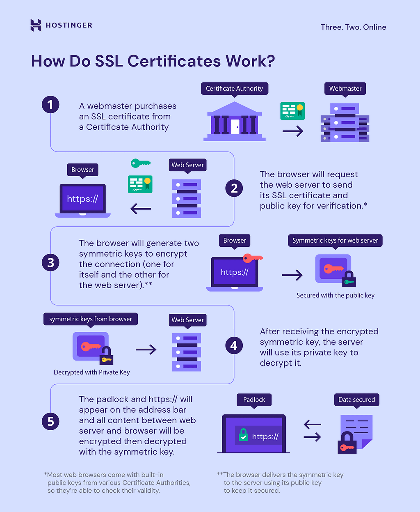
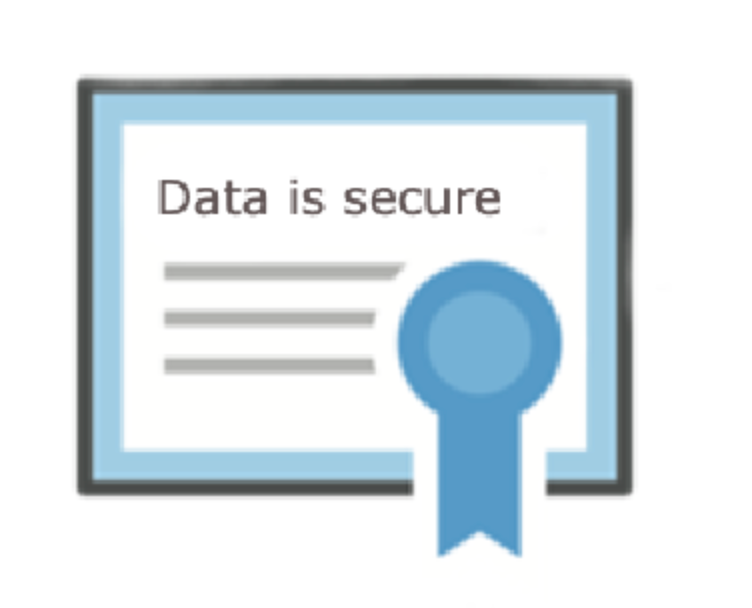
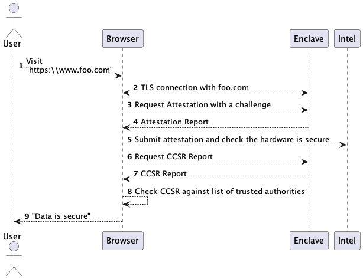
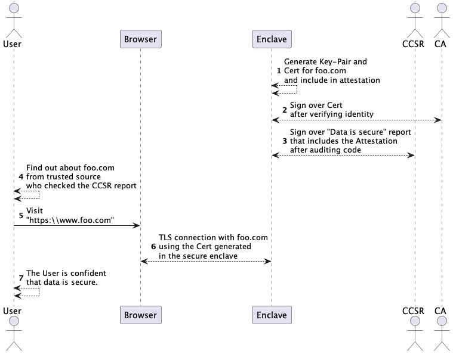
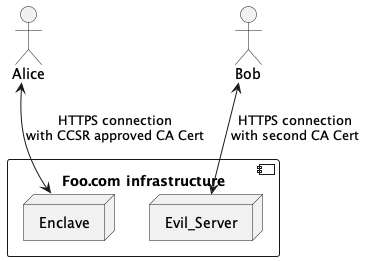
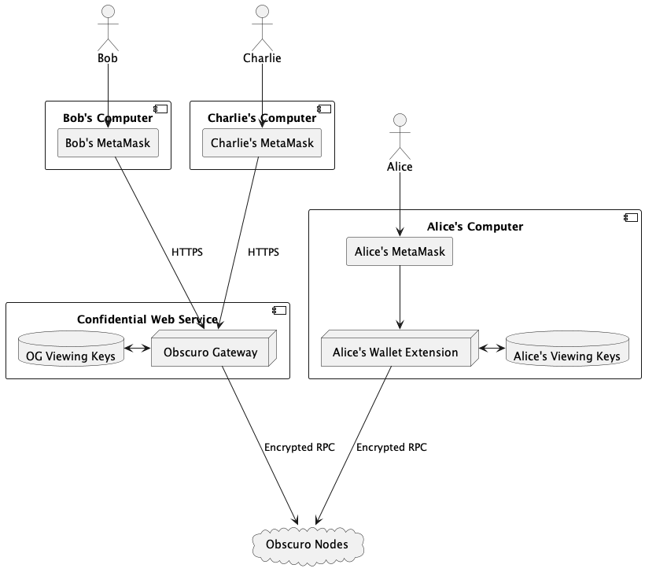

Building a confidential Web Service
Imagine your task is to create a web service that keeps all data confidential, even from the team running the infrastructure. For example, the system allows insurance agents to compare their clients in real time against each other to discover fraud. This information is so valuable that nobody is trusted to run this service if a human can access it.
One approach is using traditional checks and balances, like physically guarding the server room, but that's expensive and not very effective.
Our goal is to design a system that keeps data confidential and, at the same time, is cheap to run. The solution in this article will leverage the existing HTTPS infrastructure, confidential computing and economic incentives to achieve that. Another way to look at it is that the solution will only require trust in people and systems that don't have direct access to the data and enough skin in the game to be trustworthy.
We'll build the solution step by step by adding elements one at a time, identifying what is missing, and then repeating the process.
The connection is secure
When a user connects to a website like "https://www.foo.com", they have a guarantee that they communicate with a server owned by whoever owns the domain "foo.com". Users are expected to gain confidence through social means that "foo.com" is owned by the well-known "Foo Corporation". HTTPS guarantees that nobody else can see the data they exchange. Not the ISP, not the Wifi owner, not the government, and no hacker.
To support HTTPS, the foo.com administrator owns a key pair and a certificate signed by a trusted authority. All browsers and operating systems contain a hardcoded list of accepted authorities to complete the trust circle. Therefore, if a hacker intercepts the traffic and attempts to impersonate "Foo", they will fail to present a valid certificate for that name, and the browser will warn the user.
The image below depicts setting up an HTTPS certificate and how it keeps traffic secure.

Data is secure
We've seen how HTTPS guarantees that an attacker can't fake the domain name you connect to. So let's try to improve that by considering how we could convince users that no human can access the data they submit to the server.
For example, in our hypothetical fraud detection system, the competing companies do not want the real-time data to be visible to the system administrators because they might be tempted to sell it.
When a browser tells you that the "Connection is secure", it doesn't mean that "foo.com" will not sell your data to advertisers.
In an ideal world, after typing the URL in the address bar of a browser, a green "Data is secure" tick appears for services that offer this additional guarantee.
Let's start by designing a fantasy solution using confidential computing. This solution uses features that are not available yet, but it is useful to understand the problem and the first ingredients of the practical solution.
The "Data is secure" certificate
A program running in a secure enclave can report a measurement, but that's not very helpful. For example, the browser displaying: "You're connected to a server running the program with the hash 0x74d1c…" will not exactly fill a user with confidence that their data is secure.
We need a way from the statement above to a human-readable "Data is secure".
Similar to how the Web "Certificate Authorities" (CA) bind a name to a cryptographic key by verifying and attesting identities, we must introduce "Confidential computing security auditors" (CCSA). These are reputable companies that can audit source code and sign a certificate confirming that the program will keep data confidential if run on secure hardware.
A CCSA will bind the data confidentiality guarantee to the measurement of a program.

In this ideal model, on top of the trusted CAs, browsers must support a list of trusted CCSAs.
HTTPS into the enclave
As we've seen above, HTTPS already encrypts data between two endpoints and guarantees that nobody in the middle can read it.
To build our confidential solution, we must ensure the browser establishes an HTTPS connection directly with an enclave.
To ensure that an enclave is on the other end, the browser must execute a simple protocol that verifies the Attestation of the counterparty. Then, based on the attestation report and the CCSA certificate, it can confidently display the "Data is secure" tick.

Note that the Attestation verification has to be performed natively by the browser. It can't rely on downloaded javascript because the javascript file will be served by the service that is under verification.
With this solution, all data is encrypted in transit (HTTPS), during processing (confidential computing) and then at rest if stored in an encrypted database.
In this ideal solution, the end-user will fully trust the browser to make the best decisions on her behalf. The browser knows which CAs and CCSAs to trust and thus can inform the user that the connection and the data are secure.
Web Certificate generated inside the enclave
Unfortunately, the design we described above depends on features yet to be implemented by browsers, but we must build this service today.
The insight for the first ingredient of the actual practical solution is that the key pair backing the Web Certificate can be generated inside the secure enclave.
This means that any TLS connection using that particular certificate is guaranteed to terminate in the enclave because nobody else will have the corresponding private key.
The CCSA must audit and attest that this functionality is implemented securely, so the logical output of the CCSA certificate will be: "We guarantee that to the best of our knowledge, if an HTTPS connection is established using the included web certificate, then the data is protected".

Since the browser has no native support for secure data, it won't be able to display "Data is secure". However, that is not a big problem for the users if they receive the "www.securedataservice.com" URL from a trusted source, like their employer.
Note that users that want to use a service advertised to them must perform the extra step of visiting a trusted website and checking whether the application they want to use is approved. Only then visit the website safely.
With this step, we managed to bind a domain name to an enclave. The UX is viable even if the check is not automatic as long as it must be performed only once before using the service the first time.
"Double-spending" Web certificates
A browser connecting to a URL will check that the certificate presented by the server during the TLS handshake is signed by one of the CAs it is configured to trust. However, a website is not required to have a single certificate, so "foo.com" could theoretically use multiple certificates, some with keys generated outside the enclave.
If our hypothetical confidential service provider wants to peek at user data, they can get a second web certificate and present it to some users. If these users do not check the key from the CA certificate against the one found in the CCSA certificate, their data can be submitted to a typical server not running in an enclave, and the users will never know. This is unacceptable, as it violates the trust assumptions we stated for a practical solution.

Our task at this step is to remove this last element where users must trust the service provider.
Decentralised protocols have found clever ways to complement technical solutions with crypto-economic incentives, showing that enormous value can be secured this way.
This problem is similar to the one solved by the Ethereum proof-of-stake protocol, which prevents validators from double-signing. In both cases, the deviant behaviour can be proven cryptographically.
In the Ethereum case, the prover presents multiple signatures by the same validator over conflicting blocks. In our case, a verifier can prove the malicious behaviour of the service provider by submitting a second CA certificate for that domain.
Note: In the diagram above, if Bob was connected using a special program, he could save the certificate presented during the TLS handshake and claim a reward.
To keep the service honest, verifiers will randomly establish connections with the URL from various IP addresses using a program that checks the certificate. The condition is that the server should be unable to differentiate between a "validity check" call and a normal one to prevent the operator from doing a Volkswagen.
Deviant Ethereum validators are punished by "slashing", meaning the protocol confiscates their stake. The insight is that bad behaviour can be either prevented in real-time by making it impossible or severely punished if discovered later. Both approaches are practical.
Note: The ideal "Confidential Web Service" solution described originally prevented the service provider from cheating because a browser could detect that immediately when verifying the Attestation.
The key ingredient for the punishment solution is "Skin in the game".
Enterprise services, like our hypothetical fraud check example, can be verified by the members. If the provider deviates, they lose their reputation and thus the business.
Public services can stake crypto together with the CCSA in a decentralised smart contract. The contract will pay the stake to anyone with an alternative certificate for the same domain.
With this last ingredient in place, we have a complete solution for our Confidential Web Service. Furthermore, the solution is feasible even without an explicit "Data is secure" tick because crypto has already demonstrated that end-users are happy to use audited programs if they hear about the program from a trusted source.
The Real-time fraud checking Service
Now we are ready to wrap up our hypothetical fraud checking service.
A software development company writes a program that performs logic that helps some fierce competitors collaborate. Then, they deploy the program on a secure enclave and instruct the enclave to generate a CA certificate for their brand new "www.live-fraud.com" domain.
Then they contact "Let's Encrypt", where they prove their identity and receive a signed Web CA certificate which they feed back into the enclave.
Then they hire a reputable security audit firm which will sign over a report confirming two things:
- The Web CA certificate was indeed generated in the enclave.
- The audited program cannot send the data it receives to anyone.
With this shiny new CCSR certificate, they convince each competitor to use the system.
These companies know about the multiple certificate attack and ask their security teams to set up a random verification procedure. In case they find a discrepancy, they can sue the software developer.
When that last piece is in place, they instruct their agents to submit real-time data from their field iPads, safe in the knowledge that "https://www.live-fraud.com" cannot leak their precious data.
The Obscuro Gateway
Obscuro (now known as Ten) is a decentralised protocol offering private smart contracts. We aim to provide a user experience identical to Ethereum by supporting the same wallets and APIs to interact with the chain.
To achieve this goal, we faced a dilemma. On the one hand, the transactions and data of the users must be private. Therefore, we designed the Obscuro RPC protocol based on encryption with "viewing keys" (VK). Users can own multiple VKs, register them with a node, and request information encrypted with these keys. However, since ordinary Ethereum wallets do not support VKs, we had to find a way to bridge this gap.
Our first iteration is a "Wallet Extension" software which acts as an Ethereum node installed on the local computer from the point of view of the wallets and dApps. Behind the scenes, it handles the encrypted communication with an Obscuro node so that no private data leaves the computer unencrypted. While this solution is excellent for tech-savvy users, as it puts them in complete control over privacy, we recognise that there are better ways to onboard users looking for a "one-click" experience.
This is why we're introducing "The Obscuro Gateway" (OG). The OG is a hosted "Confidential Web Service" version of the Wallet Extension. We will release an open-source version of this software and expect some node operators to offer this service. As described above, staking will ensure that data remains secure, and all Obscuro nodes will have built-in functionality to act as OG validators.
The OG will function at a URL like "https://gateway.obscu.ro". Furthermore, the code will be open source, and a comprehensive security audit will be published. The network of validators will enforce that the gateway keeps the data private.

This approach enables us to keep the Obscuro RPC protocol simple and to offer alternatives for the needs of the various Obscuro users. For example, institutional users may want to build their own Obscuro Gateway, where they can introduce advanced features.
Conclusion
We've shown that "Confidential Web Services", web applications that keep user data private from everyone, can be feasibly built using today's technology. We at Obscuro will use this technique to build the "Obscuro Gateway" to achieve our ambition of becoming the privacy chain with the best user experience.
Building a confidential Web Service was originally published in TEN Protocol — Privacy on Ethereum on Medium, where people are continuing the conversation by highlighting and responding to this story.